Zeny Guide and Farming 101
Note to Would-be Editors and Contributors
Many of you may be mad now that some of these "secrets" are out, but know that this guide will benefit the whole server economy. Primarily by enabling new players to participate in the economy (i.e. buying the stuff want to sell and selling the stuff you want to buy).
This is a guide that is free for all to edit/contribute to. However, please be mindful that this is intended to help new players, so keep it simple, accurate, and true.
You may add videos as long as they are tasteful, pertaining to the subject and of a decent length. (No 2 hour streams etc.)
If you have edited/contributed to this guide please put your name on the Discussion page!
Please also add a proper "Summary" so your edits/contributions will be known and can be easier kept track of.
Quick links
Boosters
In Ragnarok we have an item called Bubble Gum and another version called HE Bubble Gum.
- These two items will boost your drop rate by 100% for half an hour and 200% for 15 minutes respectively.
- Grab one of these from their respective shops or from your established characters in the (level 125) Master Package.
- Before setting out to farm a rare and expensive item for a long period of time it is wise to use a booster to get as many as you can, less trips equal more efficiency and as we all know, time=money!
Another Booster is caused from leveling up to or past 170(?) where the Bubble Gum Effect takes place for a shorter amount of time, keep this in mind when you are about to reach this stage.
Cooking, Creation and Alchemy
These three involve using items to make other items.
All Class Cooking
All classes can cook using the 10 levels of cookbooks (aptly named Level <1-10> Cookbook)
- Acquire the ingredients via a Buying Store or farming them yourself (This will take a lot of time)
- Success rate is affected by DEX and LUK, while a higher food level will increase difficulty.
- Each successful attempt only makes 1 of the food.
- These are the same foods from the Slot Machine and Nova Shop.
To create these foods, you will need
- All of their proper ingredients are needed (in the same or higher quantity) (all consumed)
- The proper cookbook (not consumed)
- To use a held Cooking kit (also consumed)
A valuable resource for this can be found on www.RateMyServer.net
| Ingredient | How to Obtain | STR | INT | DEX | AGI | VIT | LUK |
|---|---|---|---|---|---|---|---|
 Blue Potion Blue Potion |
Create with Pharmacy (Genetic) or Drop | 2 | |||||
| Aloevera | Create with Pharmacy (Genetic) or Drop | 2 | 2 | ||||
 Tongue Tongue |
Drop | 20 | |||||
 Alcohol Alcohol |
Create with Pharmacy or Change Material (Genetic) or Drop (or special drop via Green Operation Coat + Scalpel Combo) | 1 | 5 | ||||
 Blue Herb Blue Herb |
Drop | 10 | |||||
| Aloe Leaflet | Drop | 5 | |||||
 Lemon Lemon |
Drop | 5 | |||||
 Prickly Fruit Prickly Fruit |
Drop | 5 | 2 | ||||
 Yggdrasil Berry Yggdrasil Berry |
Drop | 1 | 1 | ||||
 Singing Plant Singing Plant |
Drop | 1 | |||||
 Maneater Root Maneater Root |
Drop | 10 | 10 | ||||
 Royal Jelly Royal Jelly |
Drop | 5 | 5 | 4 | 10 | ||
 Illusion Flower Illusion Flower |
Drop | 1 | |||||
 Ice Cubic Ice Cubic |
Drop | 10 | |||||
| Bacillus | Drop | 10 | |||||
| 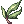 Bitter Herb | Drop | 3 | 2 | ||||
| Scorpion Tail | Drop | 20 | |||||
| Scorpion Claw | Drop | 20 | |||||
 Anodyne Anodyne |
Create with Pharmacy (Genetic) or Drop | 2 | |||||
| Yggdrasil Seed | Drop | 1 | |||||
| Amulet | Drop | 10 | |||||
 Immortal Heart Immortal Heart |
Drop (or special drop via Green Operation Coat and Scalpel Combo) | 20 | |||||
| Memento | Drop | 10 | |||||
 Heart of Mermaid Heart of Mermaid |
Drop | 10 | |||||
| 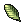 Yggdrasil Leaf | NPC Sold 4000->3040 or Drop | 10 | 3 | 4 | |||
| Pot | NPC Sold 200->152 | 1 | 1 | ||||
 Spicy Sauce Spicy Sauce |
NPC Sold 700->532 | 1 | 1 | 2 | |||
| 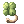 Four Leaf Clover | Drop | 2 | |||||
| Izidor | Drop | 2 | |||||
| 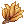 Nine Tails | Drop | 10 | |||||
| Sharp Leaf | Drop | 10 | |||||
| 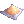 Yellow Spice | NPC Sold 1000->760 | 1 | |||||
| Savory Sauce | NPC Sold 700->532 | 1 |
Genetic Creations
A Genetic or Alchemist can brew or cook many creations.
- While ingredients are consumed, great profits can be made when enough are put together into one item, remember to set up your stats correctly!
| Ingredient | How to Obtain | Output |
|---|---|---|
 Savage Meat Savage Meat
|
Drop |  Savage BBQ (STR Dish) Savage BBQ (STR Dish)
|
 Black Charcoal Black Charcoal
|
NPC Sold 300->228 | Savage BBQ (STR Dish)
|
| Cooking Skewer | NPC Sold 300->228 | Savage BBQ (STR Dish)
|
 Blood of Wolf (3) Blood of Wolf (3)
|
Drop |  Warg Blood Cocktail (INT Dish) Warg Blood Cocktail (INT Dish)
|
 Cold Ice (2) Cold Ice (2)
|
Drop | Warg Blood Cocktail (INT Dish)
|
 Beef Head (2) Beef Head (2)
|
Drop |  Beef Head (VIT Dish) Beef Head (VIT Dish)
|
 Ice Crystal (3) Ice Crystal (3)
|
Drop |  Siroma Icetea (DEX Dish) Siroma Icetea (DEX Dish)
|
 Ice Piece(2) Ice Piece(2)
|
Drop | Siroma Icetea (DEX Dish)
|
 Comodo Tropical Fruit Comodo Tropical Fruit
|
NPC Sold 800->608 | Siroma Icetea (DEX Dish)
|
| Blue Herb (3)
|
Drop |  Drosera Herb Stew (AGI Dish) Drosera Herb Stew (AGI Dish)
|
 Red Herb(3) Red Herb(3)
|
Drop | Drosera Herb Stew (AGI Dish)
|
 White Herb(3) White Herb(3)
|
Drop | Drosera Herb Stew (AGI Dish)
|
 Drosera Tentacle(3) Drosera Tentacle(3)
|
Drop | Drosera Herb Stew (AGI Dish)
|
 Petite's Tail(2) Petite's Tail(2)
|
Drop | Petite Tail Noodles (LUK Dish) |
 Cool Gravy Cool Gravy
|
NPC Sold 400->308 | Petite Tail Noodles (LUK Dish) |
 Fine Noodle Fine Noodle
|
NPC Sold 500->380 | Petite Tail Noodles (LUK Dish) |
| 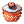 Large Cookpot | NPC Sold 500->380 | VIT or AGI Dish (Requires 1 each for attempt) |
 Melange Pot Melange Pot
|
NPC Sold 600->456 | Any Dish (Requires 1 each for attempt) |
| Ingredient | How to Obtain | Output |
|---|---|---|
| White Herb
|
Drop |  Increase HP Potion (Large) (15-10 ratio) Increase HP Potion (Large) (15-10 ratio)
|
 Mastela Fruit Mastela Fruit
|
Drop | Increase HP Potion (Large) (3-10 ratio)
|
| Spicy Sauce
|
NPC Sold 700->532 | Increase Potion (Large) (1-10 ratio)
|
 Holy Water Holy Water
|
Cheaper made using Aqua Benedicta (Acolyte) or NPC Sold 1500->1140 | Increase HP Potion (Large (1-10 ratio)
|
| Blue Herb
|
Drop |  Increase SP Potion (Large) (15-10 ratio) Increase SP Potion (Large) (15-10 ratio)
|
| Royal Jelly
|
Drop | Increase SP Potion (Large)(10-10 ratio)
|
| 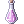 Sweet Sauce | NPC Sold 700->532 | Increase SP Potion (Large) (1-10 ratio)
|
 Grape Grape
|
Drop |  Vitata 500 (10-10 ratio) Vitata 500 (10-10 ratio)
|
 Honey Honey
|
Drop | Vitata 500 (10-10 ratio)
|
 Concentration Potion Concentration Potion
|
NPC Sold 1500->1140 |  Enrich Celermine Juice (5-10 ratio) Enrich Celermine Juice (5-10 ratio)
|
 Awakening Potion Awakening Potion
|
NPC Sold 3000->2280 | Enrich Celermine Juice (5-10 ratio)
|
 Witch Starsand Witch Starsand
|
Drop |  Condensed White Potion Condensed White Potion
|
 White Potion White Potion
|
Cheaper made via Pharmacy skill (Genetic) or NPC Sold 1200->912 | Condensed White Potion
|
 Empty Bottle Empty Bottle
|
NPC Sold 6->4 | Many things (used as a vessel) |
 Empty Test Tube Empty Test Tube
|
NPC Sold 6->4 | Many things (used as a vessel) |
| Ingredient | How to Obtain | Output |
|---|---|---|
 Fabric Fabric
|
Easier farming via Change Material (Genetic) also a Drop |  Bottle Grenade Bottle Grenade
|
| Alcohol
|
Easier farming via Green Operation Coat + Scapel Combo (Genetic) also a normal Drop or created via Pharmacy (Genetic) | Bottle Grenade
|
| Heart of Mermaid
|
Drop |  Glistening Coat Glistening Coat
|
 Zenorc's Fang Zenorc's Fang
|
Drop | Glistening Coat
|
| Immortal Heart
|
Easier farming via Green Operation Coat + Scapel Combo (Genetic) also a normal Drop |  Acid Bottle Acid Bottle
|
 Seed Of Life Seed Of Life
|
NPC Sold 60000->45600 | Glistening Coat
|
 Morning Dew Of Yggdrasil Morning Dew Of Yggdrasil
|
NPC Sold 20000->15200 |  Embryo Embryo
|
 Glass Tube Glass Tube
|
NPC Sold 5000->3800 | Embryo
|
| Empty Bottle
|
NPC Sold 6->4 | Many things (used as a vessel) |
 Medicine bowl Medicine bowl
|
NPC Sold 8->6 | Any thing created via Pharmacy (requires 1 per item attempt) |
Sorcerer Creations and Conversions
Using the below ingredients (1 per scroll) you can create an Elemental Converter by consuming them and a Blank Scroll (NPC Bought 4000->3040).
- These can mostly be obtained by easy, 1 shot monsters that anyone can farm, while the rate is a little low from some of said monsters. The best of these to farm would be Wind of Verdure from Grand Peco.
- Create Elemental Converter can be learned by any Sage without even 1 skill point (Platinum/Quest skill)!
Note: Elemental Analysis no longer exists but it will be kept here in the case of a revision being done that once again implements it. This is also official Gravity Server behavior.
- [Elemental Analysis was a skill allowing the Sorcerer to combine or break down elemental stones into multiple pieces to save on weight or create more uses.]
- The items listed are still valuable to some sorcerers.
| Fire Converter Scroll |  Water Converter Scroll Water Converter Scroll
|
 Earth Converter Scroll Earth Converter Scroll
|
 Wind Converter Scroll Wind Converter Scroll
|
 Red Blood Red Blood
|
Crystal Blue |  Wind of Verdure Wind of Verdure
|
 Green Live Green Live
|
 Flame Heart Flame Heart
|
Mystic Frozen |  Great Nature Great Nature
|
 Rough Wind Rough Wind
|
| Red Blood
|
Crystal Blue | Green Live
|
Wind of Verdure
|
Exchanges
Sometimes you can trade an NPC items for more valuable items (and sometimes EXP to boot!)
Rock Ridge
In Rock Ridge there is a wealthy merchant who will trade items for Rock Ridge coins. They are less valuable in sets of five than the coins themselves so get to it!
- Find these items doing other Rock Ridge quests, or just farm them.
- Sell the coins to players*
Midgard Camp
Via the Tripatriate Union's Feud you can exchange a few otherwise useless monster drops for profitable consumables to sell to players. While it requires a quest of a decent length it will still be of use as what you do not sell you can still use yourself.
Free Zeny and items
These tips and tricks only require your time and some talking to NPCs
- Excluding smashing plates but that's not really fighting now is it?
Banquet for Heroes (Some of it)
- Learning about the Families at Banquet for Heroes will net you an atrocious amount of EXP and some Honor Tokens to be spent on some flashy items.
- You can get great EXP from a very simple and short quest (along with more tokens of course) by doing The Geoborg's quest line
- More Tokens can be earned by doing the initial and daily kitchen quests.
Energy Crystals
A good trick to gaining Zeny without spending a dime is to talk to Reno in Eden Group HQ and grab his Energy Crystal Buffs.
- After 3 hours a buff he gives you (Additional ATK and MATK) will expire. You can then talk to him again for 2-4 energy crystals which sell for a decent price of:
- Sell these to players.
| Unrefined Energy Crystals |  Refined Energy Crystals Refined Energy Crystals
|
Pure Energy Crystals |
Investments and RNG
When items become temporarily or permanently unavailable due to a being available for only a seasonal time period, they become a strong commodity afterwards.
- Buy items that will not be available again or not available for another year at their lowest (towards the end of that season) then sell them when the price has risen.
Buy items that with only work or luck applied will create more Zeny.
- Five Rough Oridecon for example buys at a lower price than the Oridecon they create.
- This is a free of charge service from Dietrich in the Prontera Refinery, simply bring him 5 or more Rough Oridecon and ask him to make them into Oridecon, then sell that to players.
RNG
Random Number Generator (similar to chance or luck) is the gaming hope and bane of many players.
Just about everything in games that is even slightly random is given a number and is chosen out of a "lottery whether" it will be that or something else.
- In Ragnarok there are types of RNG that can make you love or curse it's existence. We will focus on these:
- Drops
- Refining
- Enchanting
Drops
Focusing on one thing will create better odds of getting the item, however the chance is always the same and is based on a per monster/item basis.
- For example killing 1 monster may yield a card or a good drop, but you may not get it ever again.
- Buy what you cannot get in a practical amount of time and sell what you are lucky enough to get but don't need.
Refining
Just like drops, refining is a fickle mistress and takes much patience and 1 or many attempts.
- Go with your gut and try things you do not expect when you feel you can spare a dime or 2.
Enchanting
Same story again? Yes!
- Enchanting may not always go the way you want but what you get may be profitable, sell the good, keep the great and retry the bad (if that option is available).
Farming
Farming is essential.
- Everything in game must be obtained somehow whether or not it gets used, sold or bought.
Non Player character (Selling to NPC)
Without farmers, there would be no Zeny to flow. Sell items directly to the NPC for direct time=money relations.
- Some items naturally sell for a good amount of Zeny due to their rarity or difficulty to obtain (hard monsters or accessibilty problems).
- Some areas to look for are:
- Gonryun Dungeon 1F: Suitable for Lv 90 - 100. Collect Honey and Royal Jelly from Zipper Bear, Bloody Butterfly, and Enchanted Peach Tree. Try not to pop the Dead Branches, you might summon a monster you can't handle.
- Desert Wolves outside Ice Cave dungeon: Suitable for Lv 100+. These wolves move rather slowly and drop Blood of Wolf (+20 INT Food ingredient) that other players would be willing to buy, and Crimson Daggers. You may also go deeper in the dungeon to collect Ice Crystal from Iceicle and Ice Piece from Gazeti (+20 DEX Food ingredient).
- Magma Dungeon 2F: Suitable for Lv 100 - 120. All the loot from all monsters sell for a decent amount of Zeny. You can also collect Doram equipment that can be exchanged into Doram Token, see Doram Equipment Exchange.
- Rachel Sanctuary 1F - 3F: Suitable for Lv 110+. The first level consists of slow-moving Demi Human enemies that can be rounded up easily, and drop Bloody Runes that can be sold to NPC for a decent amount of Zeny. You can also go deeper to farm Witched Starsand from Hodremlin and Prickly Fruit from Beholder.
- Juperos 1F: Suitable for Lv 115 - 125. All the loot dropped by Venatu and Dimik sells for a decent amount of Zeny.
- Geffenia : Suitable for Lv 120+. Diamond Ring and Gold Ring dropped by Incubus and Succubus can be sold to NPC for a good amount of Zeny. Some mobs may cast Hallucination on you, causing your screen to turn upside down. It can be cured with Green Potion, Panacea, or Royal Jelly. You can hunt some Violys to get Royal Jelly.
- This information is direct from the Nova Wiki FAQ page.
Player character (Selling to humans)
Without farmers, there would be nothing to create with. Find out what players want.
- Keep #trade open when looking for ways to make Zeny and visit the market (@go 37) to see what people are buying, most of it is included in this guide but someone may know something we don't!
- Remember other players can open buying shops as well
Efficiency
Farming multiple items at the same time can often save a lot of hassle.
- Farm Goats instead of Mavkas for Blue Herbs when you need Red Herbs as well for crafting and cooking, they drop both and their numbers dwarf the Mavkas.
- When farming any beast or demi-human type that doesn't require your full strength, use a Genetic and Green Operation Coat / Scaplel combo.
Autolooting
Looting efficiently means taking only items that will sell and sell well.
For a guide on farming Geffenia by Submarine Click here (equipment included!)
- Cards should never be sold at NPC.
- Click an item on the table to see it in market.
| Item | ID | Monster | Weight | Sell at |
|---|---|---|---|---|
 Elunium Elunium
|
985 | Abysmal Knight | 20 | Market |
 Reins Reins
|
1064 | Abysmal Knight | 1 | NPC (401) Before Overcharge |
 Battle Hook [1] Battle Hook [1]
|
1421 | Abysmal Knight | 90 | Market |
| Lord's Clothes [1] | 2318 | Abysmal Knight | 250 | Market |
 Blade Lost in Darkness Blade Lost in Darkness
|
7023 | Abysmal Knight | 4 | NPC (6000) Before Overcharge |
 Ebone Armor [1] Ebone Armor [1]
|
15014 | Abysmal Knight | 450 | NPC (20000) Before Overcharge |
 Crimson Two-Handed Sword [2] Crimson Two-Handed Sword [2]
|
21015 | Abysmal Knight | 170 | Market or NPC (25000) Before Overcharge |
| 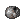 Rough Elunium | 757 | Mini Demon | 20 | Make into Elunium then Market
|
| 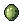 Zargon | 912 | Mini Demon | 1 | NPC (240) Before Overcharge |
 Hand of God Hand of God
|
1009 | Mini Demon | 2 | Market |
 Little Evil Horn Little Evil Horn
|
1038 | Mini Demon | 1 | NPC (264) Before Overcharge |
 Little Evil Wing Little Evil Wing
|
1039 | Mini Demon | 1 | NPC (1000) Before Overcharge |
| Ahlspiess | 1478 | Mini Demon | 100 | Market |
 Evil Wing Evil Wing
|
2255 | Mini Demon | 10 | Market |
| Blue Potion | 505 | Succubus | 15 | NPC (2500) Before Overcharge |
 Mastella Fruit Mastella Fruit
|
522 | Succubus | 3 | NPC (4250) Before Overcharge |
 Soul Staff Soul Staff
|
1472 | Succubus | 140 | Market |
 Crystal Pumps Crystal Pumps
|
2407 | Succubus | 10 | Market |
 Diamond Ring Diamond Ring
|
2613 | Succubus | 10 | NPC (22500) Before Overcharge |
| 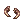 Succubus Horn | 5066 | Succubus | 10 | Market |
 Yellow Gemstone Yellow Gemstone
|
715 | False Angel | 3 | NPC (300) Before Overcharge |
 Red Gemstone Red Gemstone
|
716 | False Angel | 3 | NPC (300) Before Overcharge |
 Blue Gemstone Blue Gemstone
|
717 | False Angel | 3 | NPC (300) Before Overcharge |
| 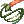 Carrot Whip | 1974 | False Angel | 130 | Market |
 Cursed Water Cursed Water
|
12020 | False Angel | 3 | Market |
| Light of Cure | 2864 | False Angel | 3 | Mora Exchange Then sell  Mora Coin on Market. Mora Coin on Market.
|
 Seal of Cathedral Seal of Cathedral
|
2865 | False Angel | 3 | Mora Exchange Then sell Mora Coin on Market.
|
 Ring of Arch Bishop Ring of Arch Bishop
|
2866 | False Angel | 3 | Mora Exchange Then sell Mora Coin on Market.
|
 White Herb White Herb
|
509 | Incubus | 7 | Market |
| Mastella Fruit
|
522 | Incubus | 3 | NPC (4250) Before Overcharge |
| Diamond Ring
|
2613 | Incubus | 10 | NPC (22500) Before Overcharge |
 Gold Ring Gold Ring
|
2610 | Incubus | 10 | NPC (15000) Before Overcharge |
 Ring [1] Ring [1]
|
2621 | Incubus | 20 | NPC (15000) Before Overcharge |
| Incubus Horn | 5072 | Incubus | 80 | Market |
 Girl's Naivety Girl's Naivety
|
12370 | Incubus | 0 | Market |
 Huuma Swirling Petal Huuma Swirling Petal
|
13313 | Incubus | 110 | NPC (50000) Before Overcharge |
 Royal Jelly Royal Jelly
|
526 | Violy | 15 | NPC (3500) Before Overcharge |
| Puppet | 740 | Violy | 10 | NPC (500) Before Overcharge |
 Golden Hair Golden Hair
|
1060 | Violy | 1 | NPC (215) Before Overcharge |
 Bass Guitar [1] Bass Guitar [1]
|
1919 | Violy | 150 | Market |
 Crimson Violin [2] Crimson Violin [2]
|
1939 | Violy | 80 | Market or NPC (35000) Before Overcharge |
| Cursed Water
|
12020 | Violy | 3 | Market |
| Professional Cooking Kit | 12127 | Violy | 5 | NPC (1000) Before Overcharge |
Patience, Prediction and Preparation
Patience is a virtue.
- Wait to buy that special non-equipment item until the price goes down.
- When something appears with a new season or content update it will eventually drop to half, a third or even a lesser fraction of it's original price allowing you to buy more for the same amount of Zeny.
- For the same reasons buy your equipment and ammunitions first to allow you to farm better and more efficiently rather than springing for cosmetics, leaving yourself in a Zeny Crisis.
Keep an eye on the Nova forums on a regular basis to find out what updates may come soon.
- Good references are the Bug Tracker and Suggestions page (look for fixed for next maintenance for or implemented)
- It is always a good idea to keep ahead of the game and try to get items that are going to become popular while lest costly, then sit on them until the time is right to sell.
Gold Coins, for example are for the foreseeable future, going to remain stable at around the same price.
- They do however boost themselves up just after a patch that introduces new things for them to be spent on, this is a good time to sell what you have stockpiled, then buy them again when they go back to normal.
Reducing Costs and Saving Time
Creating your own items is often better than buying straight outright, but know when to cut your losses.
- Some creation however is definite and should be taken advantage of.
- If you aren't lazy you can make your own Holy Water via the Acolyte skill: Aqua Benedicta saving over a thousand Zeny each!
You can also take advantage of extra drop cards to save on time.
- Use this page for some of the items that will help create some "side Zeny".
Share your gear among all of your characters that can use it for as long as you can.
- One +15 Crimson mace can go a long way for a Genetic, Sura, Mechanic or a Rune Knight.
- More multi-class items exist such as the Heroic Backpack and Giant Snake Skins, so read those job requirements carefully!
Setting up Shop
As a Merchant
A merchant has 2 skills to set up shops, one is Buying Shop and the other is Vending (selling shop)
Vending
- To vend in the market map (@go 37) you will first need to talk to the NPC in the center column. You will then be warped to a spot where it is possible to vend.
- Simply use the skill Vending to open a shop, drag or Alt + Right-click your items to put them into the window and make sure you set your prices and set them right, anything that is sold will be final!
- A store anywhere else may require sitting in a spot where vending is allowed (some maps are disabled while others are limited).
Buying Shop
- To gain the ability and licenses to set up a buying shop, go to the Alberta merchant guild and talk to Mr.Hugh (Purchasing Team NPC)
- The first time you talk to him it will be 10,000 Zeny for 5 licenses but afterwards it will be 200 each and you can buy up to 50 at a time.
- To buy within the market map (@go 37) you will first need to talk to the NPC in the center column. You will then be warped to a spot where it is possible to set up.
- Simply use the skill Buying Store to open a shop, drag or Alt + Right-click your items to put them into the window and make sure you set your prices and set them right, anything that is bought will be final!
- A store anywhere else may require sitting in a spot where vending is allowed (some maps are disabled while others are limited).
As any Other Class (Buying shop only)
By using a Black Market Buyer Shop License, any class can do set up a buying shop.
- In Morroc, enter the pub (/navi morocc 45, 106) and talk to the Black Marketeer. He will sell you one time use licenses to create Purchase Shops. Each license costs 500 Zeny and can be bought in bulk up to 10 at a time.
Videos
More efficient herb farming as SC (1080p)
+20 Food Ingredient Farming (1080p)
High Success Creation Rate Method (1080p version!)
Farming Blue and Red Herbs as Genetic (Now 1080p!)
Farming and Creating GX Poison Bottles
Farming and Creating Fruit Bombs
Outdated